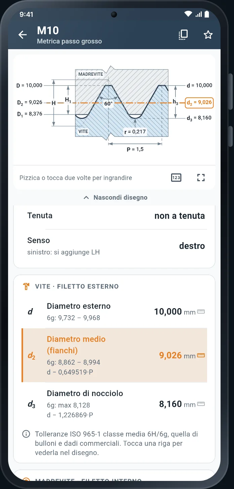

Il disegno in scala vera
Il profilo è costruito con le stesse formule delle tabelle: angoli, raggi e proporzioni sono quelli della norma.
- Sezione di madrevite e vite con i valori veri (d2 = 9,026) o solo i simboli
- Tocchi una riga della tabella e la quota si illumina nel disegno
- Vettoriale: non sgrana a nessun ingrandimento, anche a schermo intero
